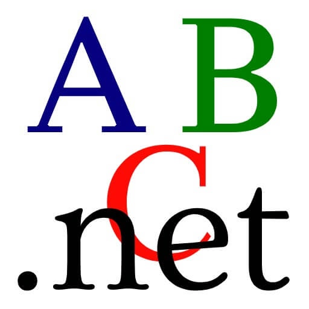

Год создания: 1970
Автор: Никлаус Вирт
Использование: кроме школ и вузов почти нигде.
Плюсы
- Быстрый
- Универсальный
- Не очень сложный для обучения
Минусы
- Может и понятный, но УЖАСНЫЙ синтаксис
- Не поддерживает ООП
- Устаревший
- Очень сильно не угодил автору сайта)
- Нафиг он вообще нужен?